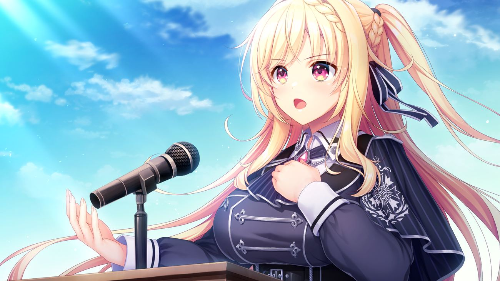

Grand Route · I

Dan yang terakhir — Hidangan Utama serta Grand Route dari Unravel Trigger: Route putri kerajaan ras Vamp, Millicent Fried Leonhard.
Mili adalah pribadi yang idealis, ambisius, dan juga seorang Philantrophist!. Idealisme tinggi akan perdamaian antar ras merupakan pondasi utama dirinya menjadi Ambassador di Frost Neutral Territory — menjaga status quo, mencegah perang lanjutan, menciptakan dunia bebas konflik.